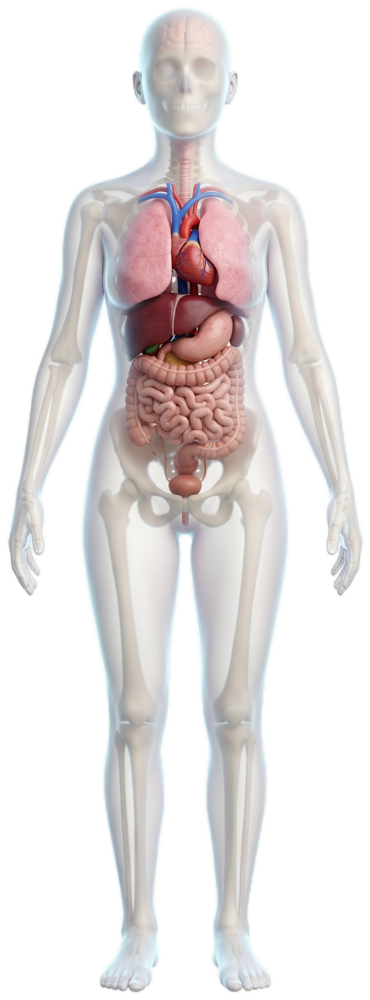

The NASA task leads the app: the five spaceflight hazards and one clear "what needs attention" card sit at the top of Home. Every number says where it came from and how fresh it is. New tools (radiation, check, report, emergency) live one tap from Home, not as extra tabs.
Five hazard rings first, then one Attention card that merges several risky signals into one explanation and one action. Your sketch's trajectory and stats follow.
Short sleep (5h 48m), HRV 38 ms (−24% vs your WHOOP baseline) and a higher dose day point the same way.
Each hazard lists only the signals that feed it, with source. Drag the timeline to replay the mission day by day and see when a risk started changing.
Watch values arrive pre-filled with source and time; only the missing ones ask for input. Mood can stay private. Five short steps, about 90 seconds.
From your WHOOP this morning. Tap one to correct it.
HRV was recorded with a loose strap. Re-measure for a cleaner value.
Mood answers stay on this device unless you choose to share them with the flight surgeon.
Guided 2-minute re-measure. The result says plainly whether the alert cleared or remains, compared only with the same device's baseline.
Compared with your WHOOP HRV baseline (49–58 ms). Apple Watch HRV is never mixed in.
Your personal dosimeter is the dose. NASA DONKI solar events are shown as context only. During a solar particle event the shelter countdown takes over the top.
Your faceless glass body. Each dot opens its real reading, source, trend and missing-data status. Already built in the app.

One compact report (trends, symptoms, missing data, actions, sources). With limited comms it waits in a queue: Draft → Queued → Sent → Acknowledged.
One tap from the header. Large, high-contrast training checklists that work with no connection; each step is a big tap target.
Four gates from today's data. Any red gate says who to talk to. The training plan adapts from the same signals.
1 of 4 checks needs the flight surgeon.
Because NTx is up 18% · within crew protocol
Camera counts reps on-device · nothing uploaded
Five tabs: Home · Mission · Check · Body · Profile. Training moves inside Mission as "Countermeasures"; the Assistant chat stays, but Judge mode hides it.
| Feature | Place | Status |
|---|---|---|
| Mission briefing (destination, duration, comm delay, EVA schedule, crew size, objective) | Sign-up + Profile › Mission | Extend |
| Five-hazard mission map | Home rings → Mission tab | New |
| Daily crew health check · Private wellbeing check | Check tab | Extend |
| Data freshness status · Source-aware measurements | Every value (chip) | New |
| Comparable personal baselines · Sensor confidence score | Metric detail · Check | New |
| Attention card · What changed since yesterday | Home | Extend |
| Repeat measurement flow | From attention card | New |
| Radiation monitor · NASA DONKI context · Shelter countdown | Mission › Radiation | New |
| Mission risk timeline | Mission tab | New |
| Offline handoff queue · Flight-surgeon report | Profile › Flight surgeon | Extend |
| Emergency protocol | SOS in header | New |
| Training countermeasure plan · Camera form check · EVA readiness | Mission › Countermeasures | Extend |
| Mission-ready body map | Body tab | Built |
| Real NASA research layer (Inspiration4 blood counts) | Body › Blood · labelled "NASA research" | New |
| Synthetic Mars demo · Clean judge mode | Profile › Demo & presentation | New |
One small line under every value. Colour of the dot = freshness.
One switch in Profile. Hides the assistant chat, XP and streaks, food-photo AI and general fitness, so judges see only the NASA mission-health flow.
Every tap: spring press + haptic. Sheets slide up with a soft spring; numbers count, never jump; hazard rings fill on arrival; the attention card gently pulses once when it changes.